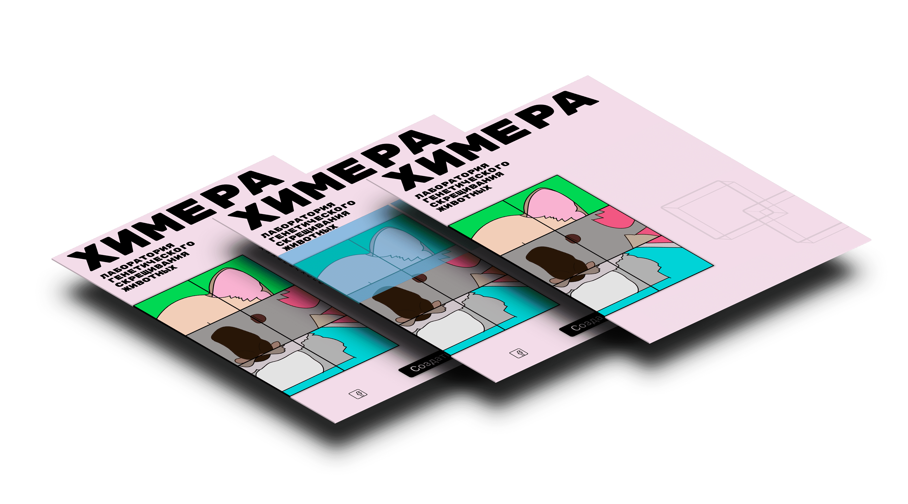
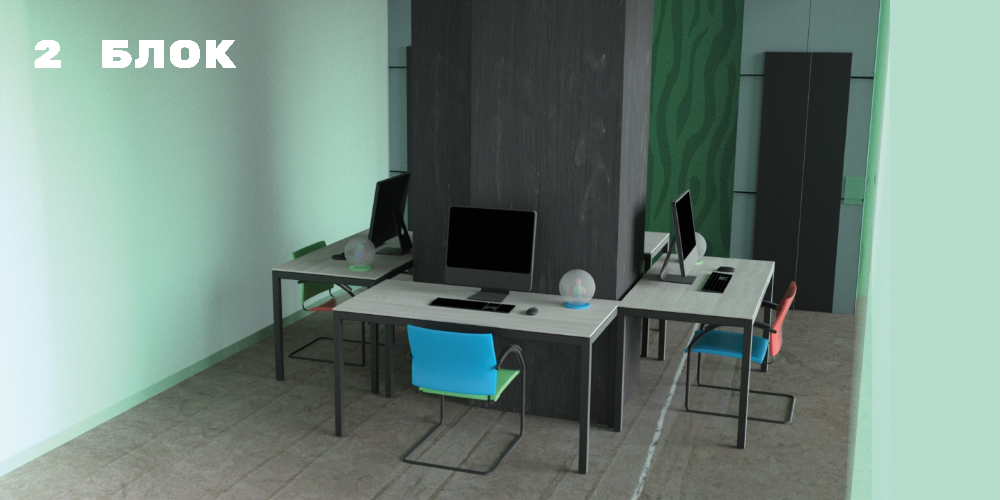

Обо мне
Привет! Меня зовут Валерия и я студентка Школы Дизайна НИУ ВШЭ. Учусь на профиле «дизайн и программирование», увлекаюсь прокрастинированием и люблю животных. Мой проект на первом курсе как раз был посвящен им.
Лаборатория генетического скрещивания животных «Химера»
Первые три модуля первого курса мы работали над фантастическим проектом, который было бы сложно или и вовсе невозможно воплотить в реальности. Нужно было придумать для него все, от названия до пространства, — и проработать.
Так появился мой проект. Химера — это лаборатория, занимающаяся созданием животных, полученных вследствие скрещивания генетически различающихся видов. По Вашим заказам лаборатория может вдохнуть жизнь в самых удивительных существ, которые готовы принести радость своим будущим хозяевам.
Малый фирменный стиль
Первый модуль был посвящён созданию малого фирменного стиля. Логотипы, визитки, блокноты, конверты, а также сумки, футболки и другие предметы относящиеся к проекту.
Основой моего малого фирменного стиля стали графические образы.

Скрещивание показано в игровой форме, с помощью «пятнашек» с изображением разных «кусочков» животных. Они соединяются в произвольном порядке и тем самым создают новых, например, котокоалу или заякота. Пятнашек может быть любое количество, но за основу взяты девять и шесть штук.

В качестве носителей я взяла сумки, футболки, миски, пачки корма для животных и ошейники.

Плакат
Во втором модуле мы делали плакаты. Нужно было сделать серию из 5 шрифтовых и 5 графических.

Графические плакаты я решила сделать динамичными.
Веб-плакат
Одним из самых необычных и сложных заданий был веб-плакат по арт-практике. Основная сложность заключалась даже не в исполнении, а в том, что было не совсем понятно, что он из себя представляет, что он должен в себя включать. Именно такая задача и стояла перед нами: придумать его структуру, предположить, как он может выглядеть.
Я решила сделать его визуально простым, сделав упор на содержание, чтобы максимально просто и эффективно показать суть проекта.
Плакат был построен с помощью сетки (grids), с шрифтами без засечек и с доминирующими буквами заголовка на переднем плане. Также, он "резиновый" и хорошо смотрится на любом экране.
Полную версию можно посмотреть здесь
3D пространство и книга
На основе фирменного стиля проекта из прошлых модулей нужно было создать пространство, которое по типу соотвествовало бы теме. Так, я построила маленьку лабораторию, которая ассоциировалась бы с чем-то игрушечным благодаря своим размерам, цветовой гамме и архитектуре. Я старалась сделать ее похожей на башню из кубиков.
В лаборатории три блока, первый для посетителей со стойкой администрации, второй – студия с компьютерами, где можно создать себе животное и третий сама лаборатория
Видео с облетом здания.
В качестве презентации создается многостраничное издание, рассказывающее о пространстве проекта.
Полную версию книги можно посмотреть здесь
Интерактивный веб-плакат
Главная особенность и отличие интерактивного веб-плаката от статичного в том, что он построен с помощью jQuery.
За основу взяты кубики из 3D ролика, которые, переворачиваясь, составляют разные комбинации животных из главных графических образов проекта.
Интерактивная часть построена с помощью библиотеки Hexaflip, которая дает возможность использовать кубы в качестве элементов интерфейса. Кубики на странице можно переворачивать по горизонтали с помощью курсора.
Полную версию интерактивного плаката можно посмотреть здесь
Груминг-салон «Фу!»
Для четвертого модуля необходимо было изменить тему проекта, максимально приблизив ее к реальности. Проект должен стать логическим и концептуальным продолжением предыдущей темы. Я решила сохранить тему животных и сделать груминг-салон.
Таким образом, в этом модуле все начиналось сначала, но только более углубленно. Придумать название, разработать концепцию и позиционирование, найти конкурентов и указать целевую аудиторию, а также сделать новый логотип и фирменный стиль с носителями. Всего нужно было предоставить 3 варианта.
Почему «Фу!»?
ФУ, междом. — выражение отвращения, реакция на плохой запах, грязь и т. д., а также запретительная команда собаке или любому другому животному.
1 вариант
За основу взяты злые и недовольные мордочки кошек и собак. Неухоженные = недовольные. Яркие украшения призваны показать преображение, которое будет происходить с питомцем.
2 вариант
Используются инструменты для груминга, как неотъемлимая часть любого груминг-салона. Расчески, бритвы, фен и т.п.. Из них сделаны паттерны. Название салона представлено в виде ножниц и клинковой бритвы.
Финальный вариант
Испачканные лапки кошек и собак, а также пятна оставленные ими на разных элементах фирменного стиля, как олицетворение неухоженности и неопрятности.

И несколько плакатов.